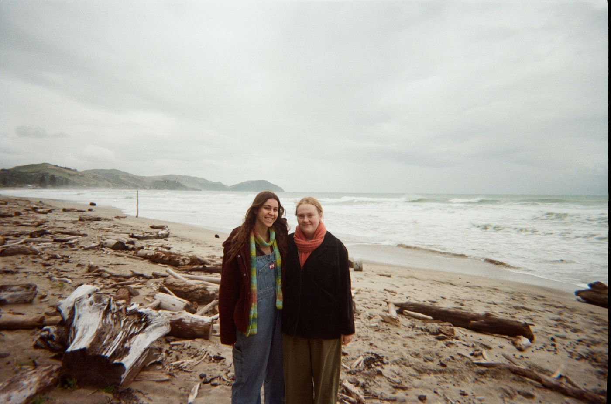

FIG N' FENNEL represents a collaboration
of two gals with many visions.
Stemming from long walks after school Jodi & Esta realised not only did they love to tell stories through creativity but there were important stories to be appreciated.
Valuing sustainability through appreciation of resources, places, people and moments Fig n' Fennel exists to remind communities how special our little corner of the world is.
Below are the first of many exhibits by Fig n' Fennel following a theme of mixed mediums, interactive experiences and most importantly an appreciation for our world.
We are eager to tell more sustainable stories through immersive experiences.
